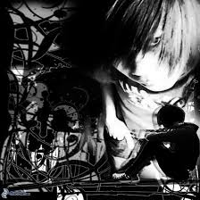

Regresar
Frases

alan.drug97@hotmail.com

A lo largo de su historia, el emo ha pasado por varias etapas. A finales de los '80 el término emo se utilizaba para calificar a las bandas de la escena musical underground de Washington D.C. como Rites of Spring y Embrace, entre otras. A mediados de los años '90, el género adoptó los patrones sonoros creados por Sunny Day Real Estate. Hoy en día, el término es erróneamente utilizado para etiquetar bandas de diversos estilos como el pop punk, el post-hardcore e incluso el metalcore. Aunque usualmente, el emo se está asociando a una nueva resurgimiento de bandas Indie Rock nacidas a fines de la década del 2000, que siguen el sonido clásico del emo de los 90 entre el noreste y el centro de Estados Unidos.4
Las bandas más populares usualmente catalogadas dentro de este estilo musical son Dashboard Confessional, Saves The Day, Thursday, Jimmy Eat World, Funeral For A Friend, Secondhand Serenade, Senses Fail, entre otros. Para la nueva vertiente del emo se suman Empire! Empire! (I Was a Lonely Estate), Joie de Vivre, Football, Etc., Annabel, Snowing e Into It. Over It., entre otros.5 4
Como consecuencia del cambio sustancial y la poca relación entre el sonido de las bandas de la escena emo-core de los '80 e inicios de los '90 con el de las bandas actualmente etiquetadas dentro del género, se han generado dos vertientes en el uso del término "emo". Mientras unos afirman que el género desapareció a fines de los '90 (Junto con el álbum Clarity de Jimmy Eat World), otros aceptan su uso para catalogar el estilo de diversas bandas de la escena popular.